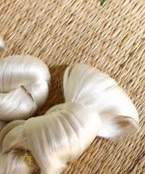
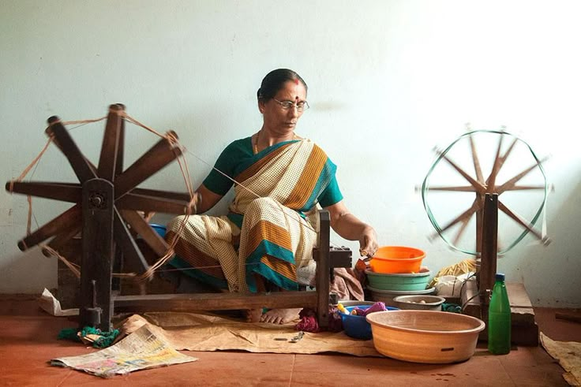
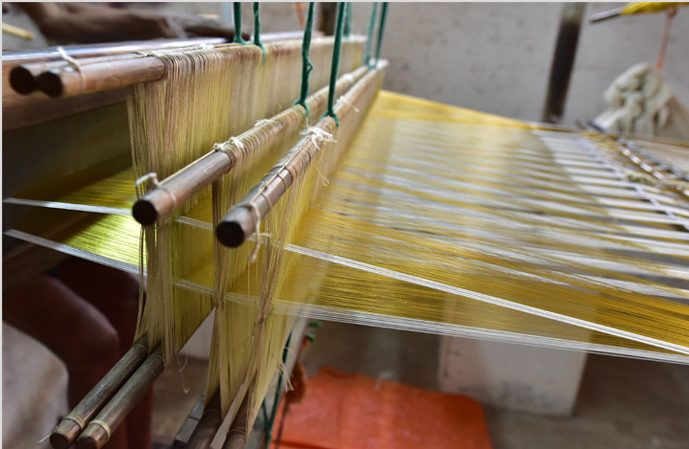
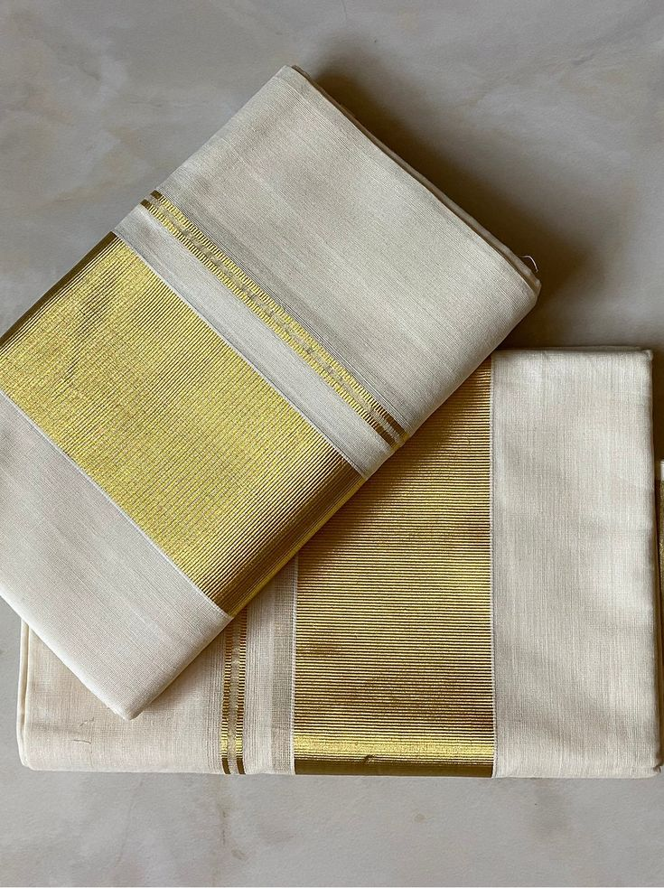

The 100-Year Narrative
In the small village of Kavish, nestled along the banks of the Bharathapuzha river, time moves to the rhythmic clack-clack of the handloom. Our story began a century ago, when the Devanga community migrated to Kerala to weave the ceremonial attire for the Cochin Royal Family.
What started as a royal commission has evolved into a global symbol of refined elegance. Each thread of our Kasavu is a testament to the hands that have passed down this sacred geometry from generation to generation, ensuring that every garment carries the weight of history and the lightness of fine cotton.

Preserving the Intangible
Our mission is not just to sell clothing, but to protect an art form that is part of India's cultural backbone. We provide fair wages, healthcare, and educational support to over 200 artisan families in Kavish, ensuring the looms never go silent.
Our Vision
To be the global gold standard for sustainable, traditional luxury, bridging the gap between ancient craft and modern sophisticated wardrobes.

The Art of Kasavu
The soul of a Kavish saree lies in its 'Kasavu'—the golden border. Traditionally made by dipping silk threads into liquid silver and then pure gold, our Kasavu represents the ultimate intersection of textile and jewelry.
- 100% Pure Zari Guarantee
- Hand-loomed in Kavish Village
- Geographical Indication (GI) Certified
From Loom to Lifestyle



